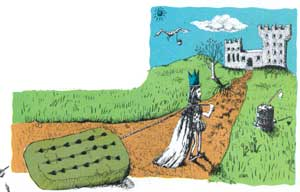

LAST LAUGH
"The Princess on the Pea"
WELL SIR, A SMOOTH-TALKING STORY-weaver, Jon Spelman, who surely lives up to his last name, once shared a couple of very entertaining fairy tales with us. Mind you, Jon sometimes gets his words jumbled up a bit. And the absolutely best way to straighten them out-and have the most fun yourself-is to read the stories the way they were meant to be enjoyed: out loud.
Time upon a once, there was a prince who wanted to get married. But he decided, for some reason foolish, that he wanted his wife to be a very real Cessprin. So about traveled he all through the world to real a find one. But every Cessprin he met was not real enough quite. There plenty of Cessprinces were, but they whether real enough were, he not figure out quite could. There was some always thing that did not right seem quite.
So home came again he and was sad quite, for he much so wished to find a prin realcess. Well, one storm a bit later little, a terrible night came on. It lighted and thunded. The stream rained down. It was fearful quite.
There then a door at the knocking came. Prince the open down to went it. Was a woman young it who out stood the door side. But, oh my, she how awful looked the rain from and the weather heavy. The hair streamed down her water and her clothes and into ran the top of her shoes and out ran at the heels.
"Are you who?" asked Prince the.
"I am a Cessprin," declared she.
"A Cessprin!" thought Prince the, but he nothing said, only into guest bed went room the, off took the bedding all, and springs on the pea a put. Then laid he the pea upon matty twentresses, and then feather twenty goose beds them upon. This pile huge on the Cessprin had to all night sleep. Test was it a.
The morning next, Prince the asked the Cessprin she slept how.
"Oh, miserably, oh," said the Cessprin. "I slept at hardly all. Know's what goodness in my bed was. I upon hard lay something. I turned and tossed all night. Now am I blue and black overall."
But happy was Prince the, for he now saw that she was indeed a very real Cessprin because all the way through those matty twentresses and those feather twenty goose beds, she had pea the felt.
And so Prince the and Cessprin married were and happily ever lived after. And was put the pea in a museum, and it is now there still, unsome less body has off it carried. Me believe, a true this is story, and have I heard it as I told it. You thank I for to it listening. End the.
READY FOR A REAL TONGUE TAN-gler? Here's "Ladle Rat Rotten Hut." (Jon says he got this one from Milbre Burch, who was featured way back in issue 91's "Last Laugh"!)
Wants pawn term, dare worst ladle gull hoe lift wetter murder inner ladle cordage honor itch offer lodge dock florist. Disc ladle gull orphan worry ladle cluck wetter putty ladle rat hut, end fur disc raisin pimple caulder Ladle Rat Rotten Hut. Wan moaning Rat Rotten Hut's murder colder inset:
"Ladle Rat Rotten Hut, heresy ladle basking winsome burden barter end shirker cockles. Tick disc ladle basking tudor cordage offer groin murder hoe lifts honor udder site offer florist. Shaker lake, dun stopper laundry wrote, end yonder nor sorghum stenches dun stopper torque wet strainers."
"Hoe-cake, murder," resplendent Ladle Rat Rotten Hut, end tickle ladle basking an stuttered oft. Honor wrote tudor cordage offer groin murder, Ladle Rat Rotten Hut mitten anomalous woof.
"Wail, wail, wail," set disc wicket woof, "evanescent Ladle Rat Rotten Hut! Wares or putty ladle gull goring wizard ladle basking?"
"Armor goring tumor groin murder's," reprisal Ladle Gull. "Grammars seeking bet. Armor ticking arson burden barter end shirker cockles."
"O hoe! Heifer blessing woke," setter wicket woof, butter taught tomb shelf, "Oil tickle shirt court tudor cordage offer groin murder. Oil ketchup wetter letter, an den-O bore!"
Soda wicket woof tucker shirt court, end whinny retched a cordage offer groin murder, picket inner widow an sore debtor pore oil worming worse lion inner bet. Inner flesh disc abdominal woof lipped honor betting adder rope. Zany pool dawn a groin murder's nut cup an gnat gun, any curdle dope inner bet.
Inner ladle wile. Ladle Rat Rotten Hut a raft attar cordage an ranker dough bell. "Comb ink, sweathard," setter wicket woof, disgracing is verse. Ladle Rat Rotten Hut entity bet rum end stud buyer groin murder's bet. "Oh, grammar," crater Ladle Gull. "Wart bag icer gut! A nervous sausage bag ice!" "Buttered lucky chew whiff, doling," whiskered disc ratchet woof, wetter wicket small. "Oh, grammar, water bag noise! A nervous sore suture anomalous prognosis!" "Buttered small your whiff," inserter woof, ants mouse worse waddling. "Oh, grammar, water bag mousey gut! A nervous sore suture bag mouse!"
Daze worry on forger nut gull's lest warts. Oil offer sodden throne offer carvers an sprinkling otter bet, disc curl an bloat Thursday woof ceased pore Ladle Red Rotten Hut an garbled erupt.
Mural: Yonder nor sorghum stenches shut ladle gulls stopper torque wet strainers.
Editor's Note: To order Jon Spelman's cassette tape, "Chin Music, "filled with 11 entertaining (nontongue-twisting) tales, send $9 (postpaid) to Jon Spelman, 1526 Buchanan St. N. W., Washington, DC 20011.
|
 ILLUSTRATION BY BILL LESSNER |
|
|